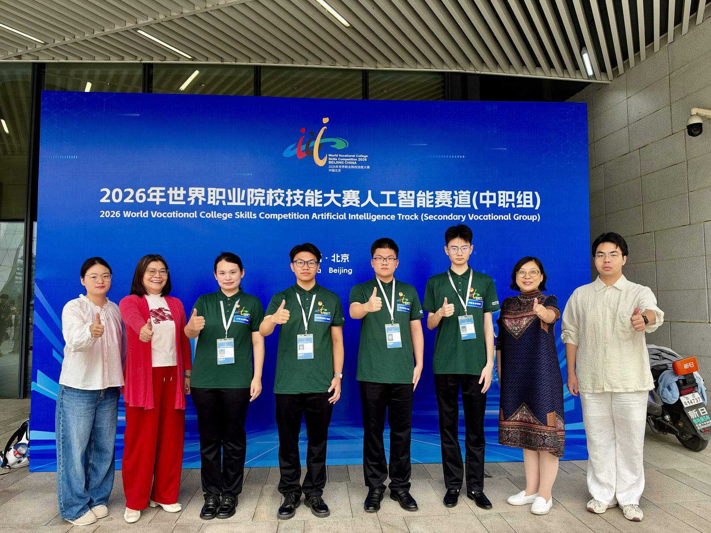
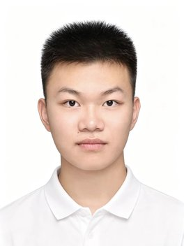
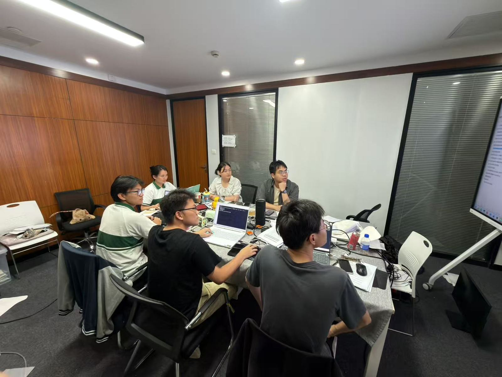
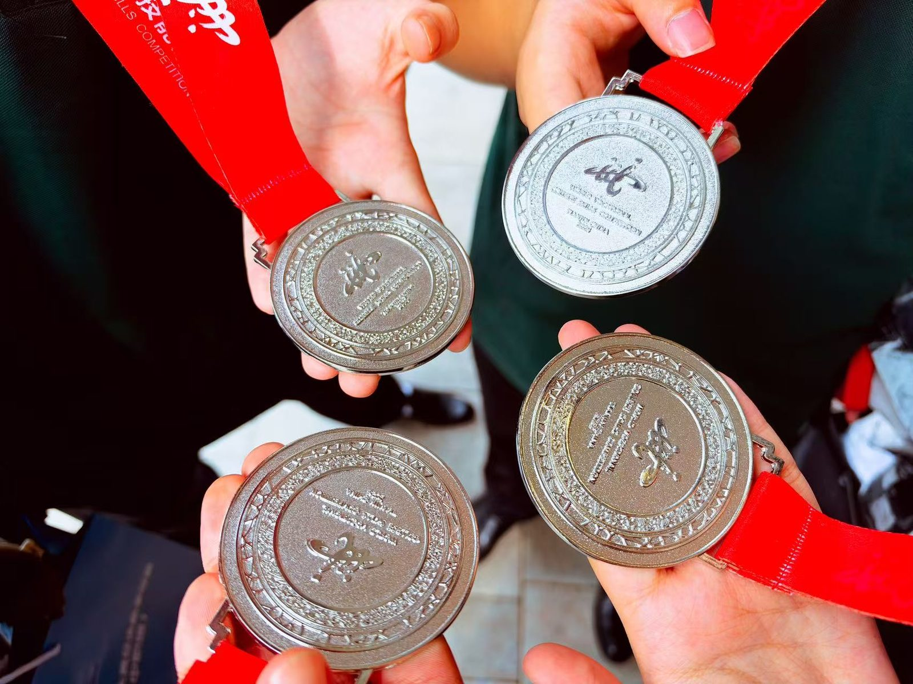
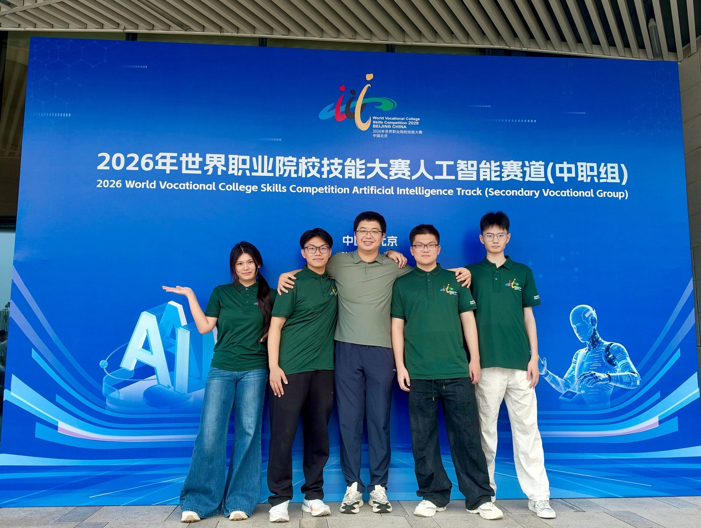
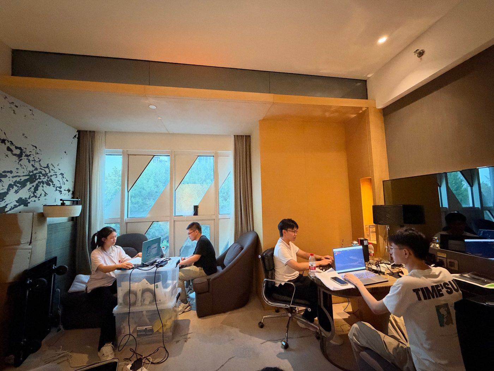
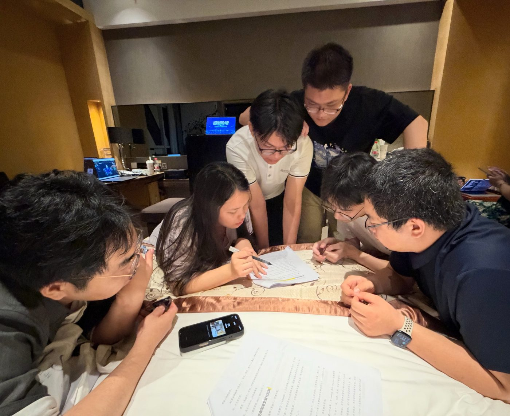
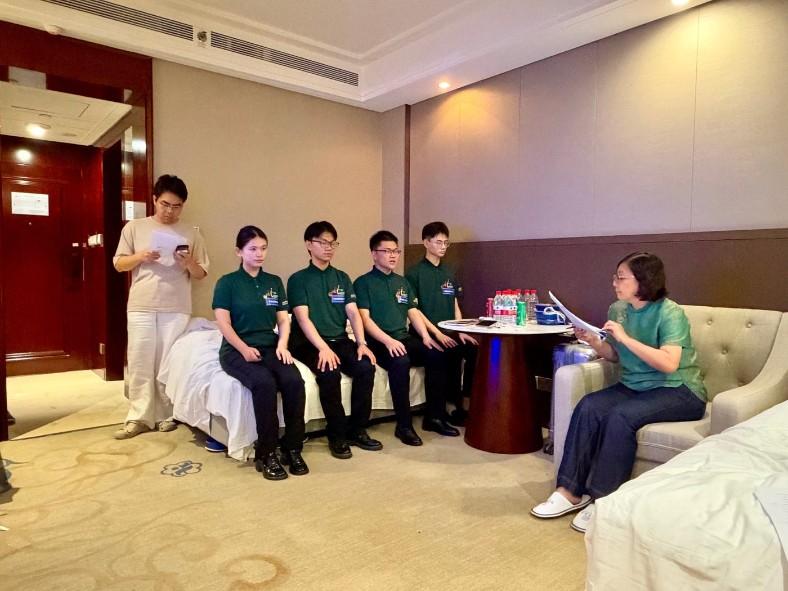
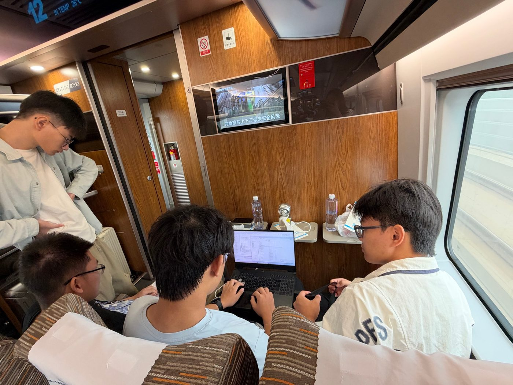

引 言
9月21日至25日，2026年世界职业院校技能大赛总决赛争夺赛人工智能赛道（中职组）由北京市丰台区中英实验学校承办，全国119支队伍同场竞技。
计算机系李文杨、李美熙、刘华栋、马明阳四位同学在指导教师柯宇、陈奕扬带领下，登上银奖领奖台。

岗位分工
-
团队组建 · 明确岗位职责
参赛团队由计算机系四位同学组成，各司其职、分工协作，相互补位、彼此支撑；指导教师柯宇、陈奕扬全程带队。
-
刘华栋AI 安全分析师24005班班主任 钱维娜
-

马明阳具身智能运维工程师24005班班主任 钱维娜 -
李文杨安全算法工程师24003班班主任 朱虎声
-
李美熙AI 安全架构师&队长24004班班主任 周海艳
指导教师柯宇、陈奕扬
-
项目侧重
-
数据准备 · 可追溯与清洗
开展垂域模型训练，优先选用来源可追溯的数据集；利用脚本完成样本去重，过滤残缺无效数据，避免模型过拟合，并做好格式适配，匹配训练框架输入规范。
-
训练与调优 · 量化微调
选用轻量化底座，采用 QLoRA 结合 4-bit 量化进行微调，调试学习率、截断长度等超参；训练过程监控 loss 收敛，保障训练效果。
-
样本与纠偏 · 人工把关
实战得到的对抗样本需要人工复核筛选后，才可加入数据集迭代模型；模型实际输出的研判结果，也要预留人工纠偏环节，及时修正误判，确保输出结果可靠。
朝夕备赛
-
研读规程
自九月初起，指导教师柯宇、陈奕扬全程带队，深入研读赛项规程，拆解评分要点，并结合队员特点制定训练方案。训练从模型训练、参数调优到系统集成、现场部署，全流程精雕细琢。
-
日夜攻坚
训练基地的灯光常常亮到深夜，键盘敲击声、小组讨论声、人机交互的声音交织在一起。为让模型精度再提升一点，四人反复调试上百次；为排查一行报错代码，逐行分析、不断验证。

-
模拟赛场
从九月初到比赛当天，团队每天坚持训练，一遍遍模拟赛场流程，在失误中总结，在压力下成长。遇到技术瓶颈时，指导教师耐心指导；队员心态波动时，老师及时疏导。
-
后方保障
备赛期间，计算机系主任朱艳梅全程跟进训练工作，密切关注训练进度，精准指导训练内容，统筹调配训练资源。出征前夕，校领导专程来到训练现场为选手们加油鼓劲；学校各部门高效联动。
赛场夺银
-
赛项内涵
人工智能赛道聚焦真实场景下的方案设计、系统部署与运行维护，重点考察选手的专业技能水平，同时兼顾职业素养、团队合作与创新创意等综合素养。
-
四个环节
赛场上，四位同学按算法设计、模型优化、系统集成、现场调试的顺序依次推进。四个环节须在规定时间内连贯完成，对选手的综合素质要求极高。
-
沉着应战
面对瞬息万变的技术难题与强劲对手，四位同学沉着冷静、从容应战。从突发问题的及时应对，到赛事任务的精准落地，每一次协作都默契十足。
-
成果转化
赛场上每一个步骤都有条不紊，平日的训练成果被完整转化为赛场优势。四位同学以稳定的心态完成赛事任务，成功斩获银牌。用实力为学校争光，用奋斗为青春添彩。

赛后复盘
-
能力沉淀
赛项要求覆盖方案设计、系统部署与运行维护，赛场任务则是算法设计、模型优化、系统集成与现场调试，两条线索在同一套能力上收束。
-
素养延展
赛道在重点考查专业技能水平的同时，兼顾职业素养、团队合作与创新创意等综合素养。对参赛者来说，前一项是当下的答卷，后几项是更耐久的积累。
-
默契协作
在压力下形成的配合方式，比单次成绩更可延续，也更能说明团队为何能在现场始终保持从容。
赛 场 图 集





留 言 区
还没有留言，来说第一句吧